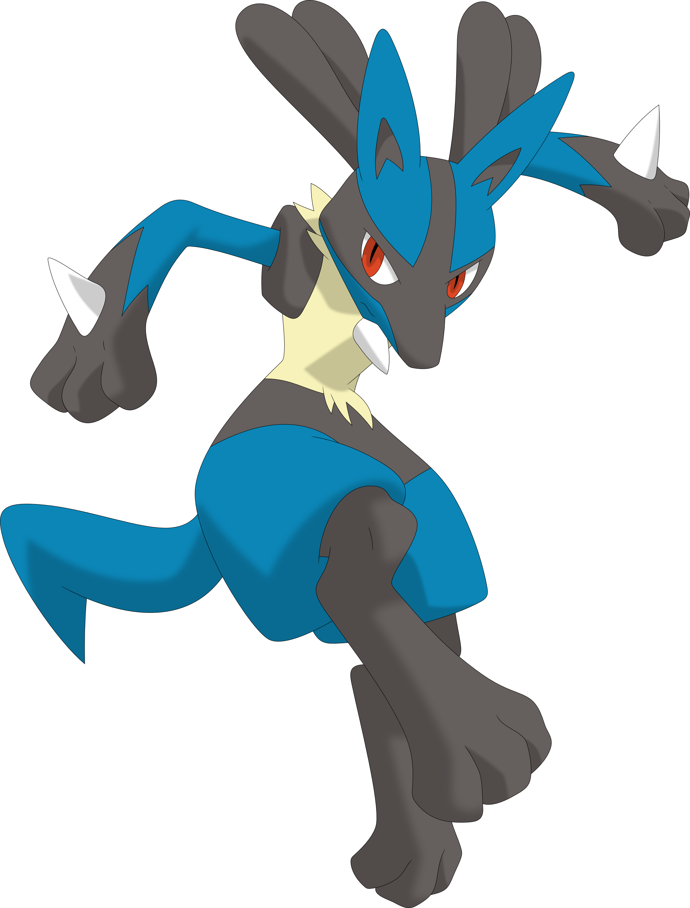
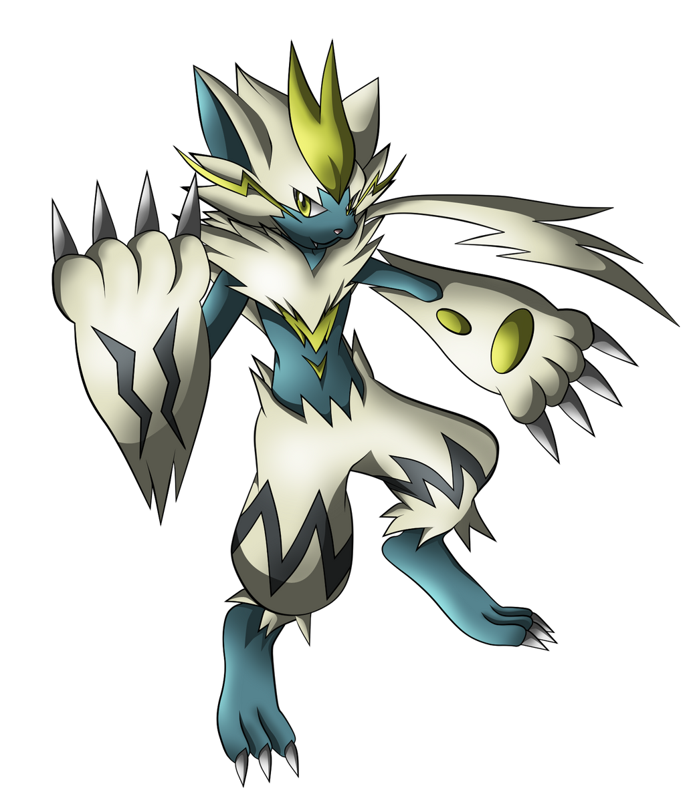

Basic of pokemon unite
Type of pokemons in pokemon unite
All all-rounder are type of tank whose defense and attack are good but not good for scoring and stealing in team fights all all-rounder have a main and most of the all-rounder are melee attacker and evolve at a really high level .
All attacker are like of glass tank whose defense is really low but attack is really high . all attack are ranged and good for stealing but not for scoring .
All defender are like wall defender have high defense but low attack . good for goaling but bad in stealing
All speedster are like mouse similar to attacker but in melee form . because low defense and close attack . all speedster have dashing move for escaping and good for stealing and goaling .

All supporter are like your freinds who help you and in team fight supporter is really really important support are similar to allrounder but good for goaling and bad for stealing